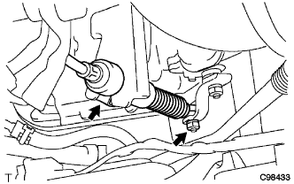

Neutral start switch Assisted |
| 1. Neutral start switch Assisted |
 |
Attach the nin Yutoral Start Sweetness and temporarily attach the bolts.
Attach nuts and nut stops.
Temporarily attach the control shifuture bar.
Rotate the control shifuturebar until it stops in the counterclockwise direction, rotate 2 notches in the clock direction from that position to the N range, and remove the control shearft lever.
Combine the neutral reference line and the nut stopper to tighten the two bolts.
Use a flathead screwdriver to make a nut stopper claw.
Attach the control shaft lever and a spring washer and tighten the nut.
| 2. Transmission Control cable Assisted |
|  |
In the nut, attach the control cable to the control cable to the shifutureber.
In the clip, fix the control cable to the bracket.
| 3. Shift lever position inspection |
The shift lever shifts from N range to each range.At this time, the shift lever can be operated smoothly, moves moderately in each range, and confirms that the position indicator is displayed and the shift lever is matched.
Make sure that you can shift to each range of P, R, and L only when the shift lever is pulled to the front.
Start the engine and shift to the D range. The vehicle progresses forward, and when the R range is shifted, a buzzer sounds and the vehicle retreats.
| 4. Shift lever position adjustment |
Remove the nut of the control shaft lever and separate the control cable.
Turn the control shaft lever until it stops in the counterclockwise direction, and then return to the position (N range) in two steps.
 |
As shown in the figure, the shift lever is shifted to the N range, pressed against the R range side, attach the control cable and tighten with a nut.
After adjustment, check the operation condition and operation.